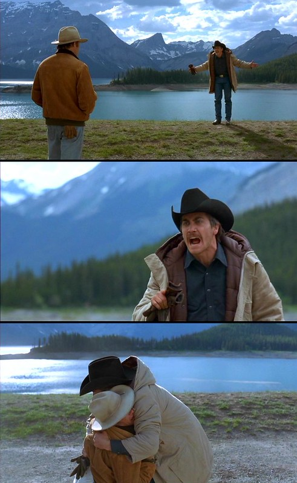

Connection is the bond between two individuals whose lives are deeply intertwined. Some might call this being soulmates, but sometimes external circumstances tear them apart, preventing them from being together. Despite this, the intensity of the connection remains undeniable. It’s more than a fleeting attraction—it’s a profound experience that, for some, transforms into a bittersweet memory, leaving those who’ve lost it with a lingering sense of what could have been.
A hypertext narrative that immerses the user in an intimate experience, but with limited time to make decisions. The story emphasizes the fleeting nature of intimate moments and encourages users to recognize their significance before they disappear.
An interactive webpage that features songs paired with love stories. As users click through the page, they are introduced to a new song, each accompanied by a unique narrative, emphasizing how love can live on through memories.
A webpage featuring six distinct love stories told through narratives and images. Created by Hinge, it highlights modern love by showcasing real-life couples who met on the platform, illustrating the diverse and unique ways people connect today.
Mia & Sebastian: La La Land (2016)
Evelyn & Waymond: Everything Everywhere All at Once (2022)
Jack & Ennis: Brokeback Mountain (2005)